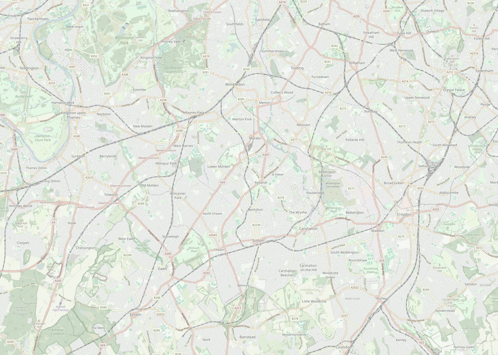

Faster orbital journeys.
Indicative Sutton–Kingston journey-time improvement target.
Outer London 03
Six stations. One orbital connection.

Schematic overlay — not to scale · Map: © OpenStreetMap contributors
Indicative Sutton–Kingston journey-time improvement target.
Population and employment base across the Croydon–Sutton–Kingston corridor.
Scenario estimate, subject to detailed demand modelling.
Route Choice
From fragmented choices to a clearer orbital rail option.
Kingston ↔ West Croydon / Croydon areaDirect by road, but exposed to congestion and car dependency.
Can be competitive station-to-station, but often relies on indirect routing and interchange through radial corridors such as Clapham Junction.
Kingston → Surbiton → Worcester Park → Sutton → Wallington → West Croydon, using existing stations and rail corridors where feasible.
Navigation-style comparison
The SLO target assumes a direct orbital service across six existing stations and five short inter-station sections, plus reduced interchange penalty and a modest walking/waiting allowance.
Indicative comparison only. Current times vary by time of day, origin/destination and service disruption. SLO time is a target estimate subject to feasibility, timetable and demand modelling.
Corridor Evidence
A focused Outer London corridor with major population, employment and service nodes.

The heatmap highlights population and activity clusters around Kingston, Sutton and Croydon. The proposed route uses this corridor as a focused case study for improving orbital public transport between Outer London centres.
The heatmap highlights population and activity clusters around Kingston, Sutton and Croydon. The proposed route uses this corridor as a focused case study for improving orbital public transport between Outer London centres.
Map background: © OpenStreetMap contributors. Density focus overlay: project demographic mapping; dataset/source to be confirmed.
Kingston, Sutton and Croydon form key residential and activity nodes within the corridor.
Residents and workers move across borough boundaries for jobs, education, healthcare and local services.
The proposed link connects these nodes directly, reducing reliance on indirect radial journeys.
Proposed Solution
An Overground-style orbital rail service connecting Kingston, Surbiton, Worcester Park, Sutton, Wallington and West Croydon, using existing stations and National Rail corridors where possible.
Service Logic
Orange line shows the proposed SLO service linking Kingston, Surbiton, Worcester Park and Sutton.
Uses current stations rather than proposing new station construction.
From Sutton to West Croydon, the concept reuses the existing rail track; other sections would need feasibility review and timetable integration.
Coordinates timetables, interchange, wayfinding and passenger information to create a clearer orbital route.
Implementation Roadmap
A phased pathway for testing, integrating and delivering an orbital rail service using existing stations and rail corridors where feasible.
Delivery would depend on detailed feasibility, capacity and funding assessment.
Delivery Risks
A stronger orbital link could create major benefits, but it must be designed around political, social, construction and demand risks.
Risk Orbital rail investment may compete with other transport priorities and face local resistance.
Mitigation Use phased delivery, evidence-led appraisal and borough consultation to justify priorities.
Risk Benefits may concentrate near station catchment areas, excluding residents further from the route.
Mitigation Improve feeder buses, walking, cycling and interchange access to widen the catchment.
Risk Upgrades may cause temporary noise, closures and disruption near stations and rail corridors.
Mitigation Phase works, protect access to town centres and maintain early engagement with residents and businesses.
Risk Passenger demand depends on journey time, service reliability and whether the route feels clear and useful.
Mitigation Use demand monitoring, timetable testing and phased service adjustment before full rollout.
Managing these trade-offs is essential to keeping the proposal desirable for residents, deliverable for boroughs and operationally feasible for TfL and rail operators.
Precedent In Progress
Grand Paris Express Line 15 shows how orbital rail can connect suburban centres without routing every journey through the city centre. South London Orbital Link adapts the orbital principle, not the scale.
Source: Bonjour RATP; Webuild; Paris Metro Line 15 official diagram.
Stakeholder Fit
Need faster, safer and more reliable orbital journeys.
Need accessible town centres, less congestion and politically deliverable improvements.
Need operationally realistic services, timetable reliability and manageable constraints.
Residents define desirability, boroughs shape deliverability, and operators determine operational feasibility.
Evaluation Indicators
These indicators would test whether the proposal improves orbital public transport competitiveness without ignoring operational and stakeholder constraints.
References And GAI Statement
Full references, data sources, image credits and GAI statement are provided below.
This site is linked from the Assessment 2 poster QR code.
Scan for project website, references & GAI statement.
Numbered References
[1] Transport for London — Travel in London reports. [2] Office for National Statistics — Census 2021. [3] TfL Journey Planner and Google Maps driving directions, checked 9 June 2026. [4] Bonjour RATP — Metro Line 15. [5] Webuild — Grand Paris Express Line 15.
Image And Data Credits
- Route schematic: created by authors for academic assessment purposes. - Paris Line 15 diagram: simplified diagram redrawn by authors based on Bonjour RATP and Webuild. - Map background: © OpenStreetMap contributors.
GAI Statement
GAI statement to be finalised by the group before submission.